Published Works p.I
SALENG
Works are published under Saleng. Saleng is the literary folio of the Baguio City National High School Special Program in the Arts(Literary Arts).
SALENG Volume 8

Works published under this volume:


Poetry
The following poems will be subdivided during what age I wrote them. Due to my involvement with online writing sites, some are posted online. Some of my poems are posted in Wattpad and Writerscafe. I go by the username Rhianne Ney(writerscafe) and AcquiesceOrbit(wattpad). Now, I have written lots of poems given as how that's the common things we are tasked to write in our journals during High School. So, the poems you'll see here are merely handpicked for showcase. Please do enjoy reading them.
Ages 13, 14, 15, 16
I Apologize

Sorry if I found out,
I was oblivious at first,
You were calling me names,
And talk behind my back every time.
Sorry if I'm not a person likeable,
I can't change that fast,
And I don't want to change for you,
Because I feel unfair.
Sorry if I displease you,
I cannot be what you want me to be,
I didn't wish to know the truth,
Because I don't want to be hated.
I cry every night,
Wishing that everyone should just accept who I am,
I want to be accepted.
This simple wish,
I know it might not come true,
So, God please help me.
Confessions of a Murderer

Blood from the tip of my sword
I killed, take my word
It’s not a perfect crime
But that’s all I can afford.
Singing in the crimson rain
Laughing at the fallen’s pain
It’s not a perfect crime
Yet that’s how I reached my fame.
Standing over dead bodies
Ignoring even the cries of babies
It’s not a perfect crime
Yet my mark in them remains.
I take lives! Lives!
That’s how murder takes vibes
It’s not a perfect crime
Yet I still caught them in murderous vines.
Dear...

Dear Ears,
I wish that you can't hear,
So you wont discover any evil,
Forever your deaf,
So you wont hear harsh and evil words.
Dear Eyes,
I wish that you can't see,
So you wont discover the truth
No one will tell you what you can't be,
Without sight you can no longer pretend.
Dear Mouth,
I wish that you can't speak,
So that you wont find the urge to compare,
Hurting others with words is not something you would dare.
Dear Heart,
I wish that you can't feel,
So that you wont be hurt,
Forever you'll be still,
So no one can make you feel pain.
An Unwanted Child
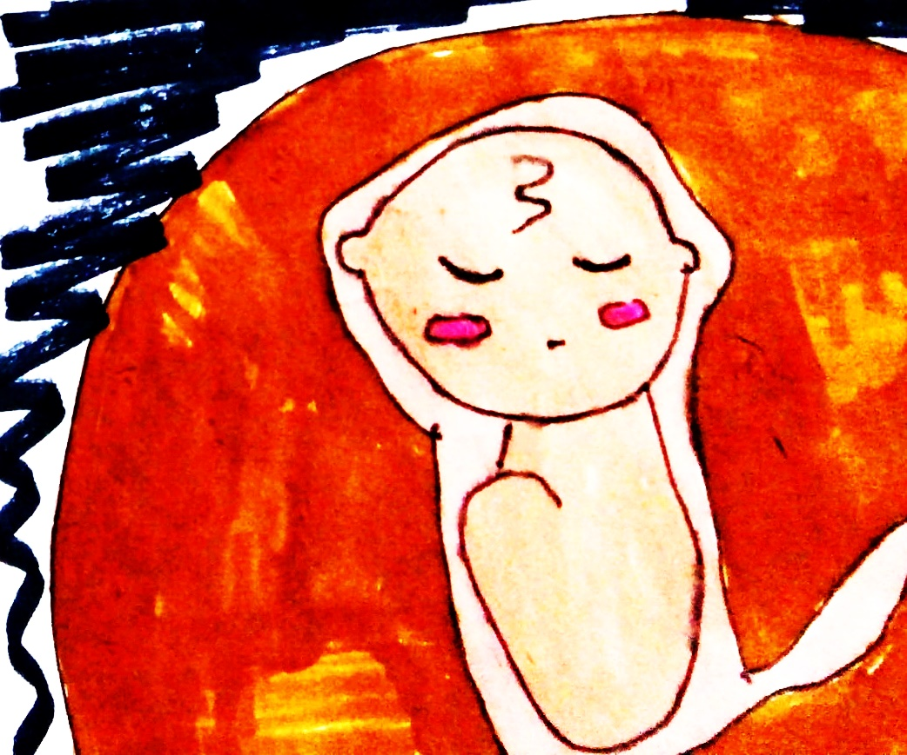I was hoping to be born,
When I get out I will give my mother joy,
"You need to be removed from me."
Mother, what are you saying?
Do you remember when you said I was important to you?
Why are you discarding me now?
Do you think I'm just one of your mistakes?
Mother, I'm not, I'm a blessing.
What's this?
I feel like there's someone coming,
I will try to escape from this,
I want to be born as your child.
My perpetrator tightens its grip and crushed my upper body,
What shall I do? Please help me!
Please don't let them destroy me!
Why can't you hear my please?
Mother, I love you, I want to see you
What do you really want, Mom?
Do you hate me?
I tried to blink but it's the end,
I'm sorry, Mommy I didn't hold on til the end.
My dream to see you and this world
Was quickly crushed by the heartless perpetrator.
Si Binibining Mapagkunwari
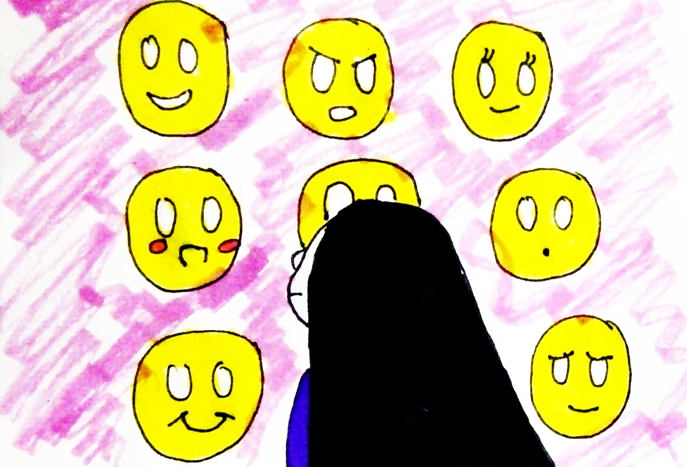Si Binibining Mapagkunwari
Iba't ibang maskara sa kanya'y nagkukubli
Saan mang dako magtungo
Pilit itinatago ang tunay na pagkatao
Si Binibining Mapagkunwari
Poot ay nasa likod ng ngiti
Kagaslawa'y tago sa kilos na kimi
Tunay na ugali'y kinubling mabuti
Si Binibining Mapagkunwari
Nilinlang pati ang sarili
Bulag na nga sa katotohanan
Pagkatao niya pa'y nilamon ng kasinungalingan.
Cellphone o Bibliya
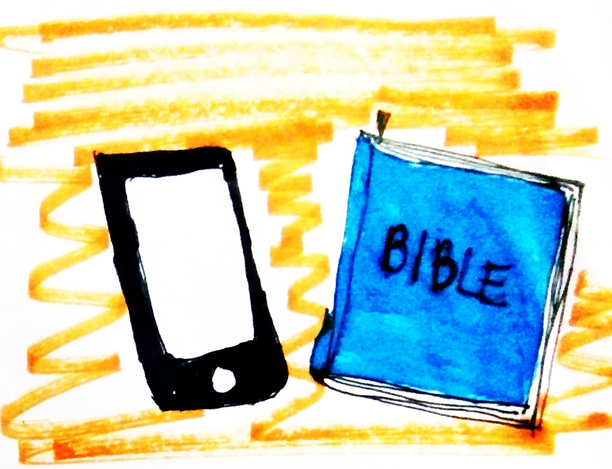Ang cellphone palaging kasama
Ang Bibliya kahit Linggo'y di madala
Ang cellphone palaging katabi sa gabi
Ang Bibliya'y nakatago lang at itinatabi
Ang cellphone palaging nagagamit
Ang Bibliya'y inaanay na sa kabinet
Ang text sa cellphone laging pinapasa
Ang Salita ng Diyos di man lang mabasa
Ang cellphone ngayo'y buhay ng tao
Ang Bibliya'y parang puntod sa sementeryo
Para sa iyo, alin ba ang mas mahalaga?
Cellphone o Bibliya?
Huwad na puti

Mainit ang pagtanggap ng publiko
Nakita lamang ang anino nito
Mag-uunahan sa paglapit dito
Makahaplos lang kahit isang daliri nito
Para sa kanya maraming dumalo
Maibsan lang ang sakit na nangaabuso
Animo Edsa Revolution na pinagulo
Makahaplos lang kahit isang daliri nito
Mas sikat pa sa mga artistang idolo
Kahit isang beses lang lumabas sa lungga nito
Halos di na ito makita sa gulo
Makahaplos lang sila ng isang daliri nito
Kahit magkasakitan ng ulo
Magkabalian pa ng buto
Masilayan lang itong rebulto
Makahaplos lang kahit isang daliri nito
Cltr + X

Kung may permanent delete lang ang buhay
Iseselect all ko ang lahat ng malulungkot na araw
Mga luhang pumatak sa aking mga mata
Binaong galit na di ipinakita
Isasama mga nasayang na oportunidad
Masasakit na salitang natatanggap
Mga tuyong dahon na pagkadismaya
Mga taong di ko na sana nakilala
Idedelete ko na itong lahat
Aking CPU ay irereformat
Sa bagong landas ang buhay ay uusad
Mga karanasa'y maari ng mapaunlad.
Ages 18, 19
Ignorant
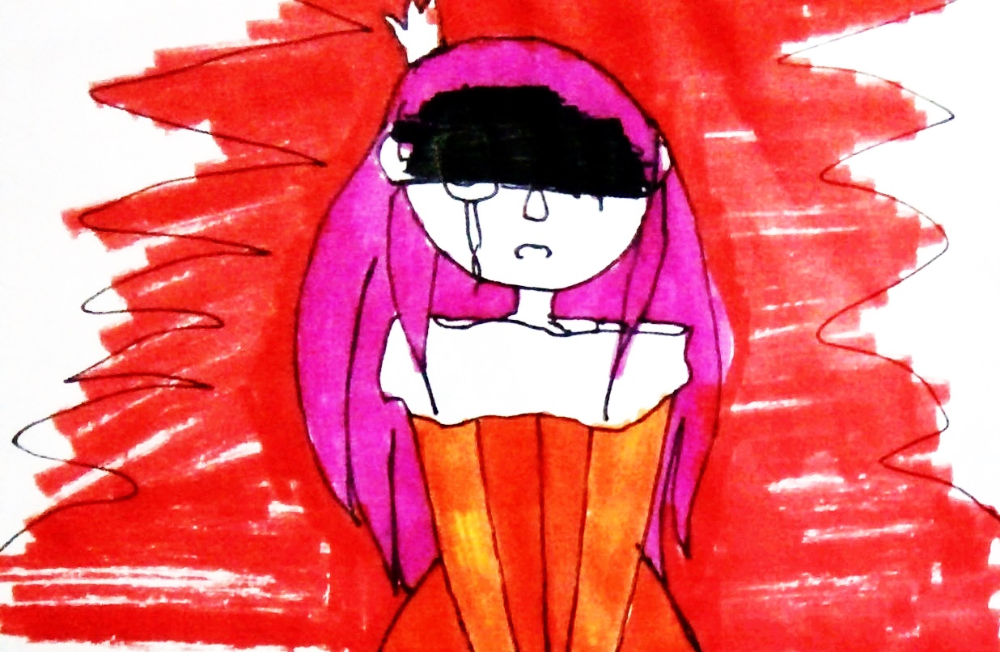The Princess sits on her tower
Protected, loved, never suffered
So she wanted to have an adventure
Adventure! Adventure!
The princess escapes her tower
Trampling on the field of flowers
In her eyes are wonder
Of course, it's an adventure
The princess walks the bright forest
Getting far from all treated dearest
Her smile flourished, fairest
Adventure! That's a neat quest!
The princess stumbles upon thorns
Scratches, blood, and burns
Her eyes fill with tears
Are the prettiest the darkness had seen
Hypocrite
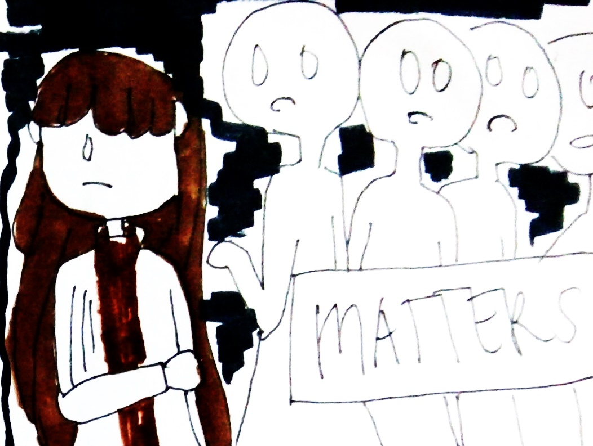You want them to be nice to you, but you can't be nice to them
You want them to respect you, but you're not respectful enough
You want them to apologize, but you won't apologize either
You want them to love you, but you won't love them properly
You want them to treat you fairly, but do you treat them fair enough?
You want them to stop judging you, yet you judged them too
You want to matter, but have you ever tried to make them matter too?
What is Love?

What is love, I wonder
If it will leave your heart breaking
If it will only cause you sadness
If it will always be unreturned
If it will always be painful
What is love, I wonder
If it will be deceitful
If it will be inconsiderate
If it will be anything but distraught
What is love... I wonder
The Villaintine

The prettiest princess in the kingdom
Decided to know the hassle
Of loving the villains of the land
Gone were the flowers and butterflies
Replaced with tears and lies
Of loving the villains of the land
Goodbye, farewell, to kindness and warmth
Hello, greetings, to loss and dullness of mirth
Of loving the villains of the land
And yet maybe there's still love underneath
The coldness of a heart
Of the villains of the land
Rags
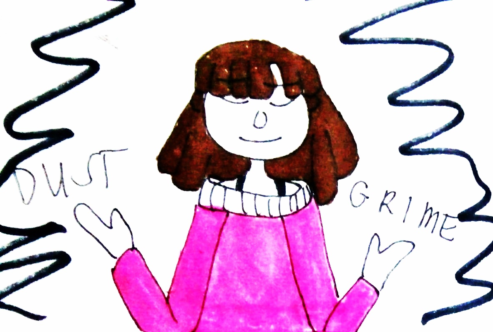Yes, indeed, you are pretty
A beautiful, delicate and white lily
Smiles that shine beautifully
Eyes that express love endearingly
Yes, indeed, you are pretty
But do try to break your delicate fingernails in strife
Dirty your clothes with grime
Let sweat dampen your makeup
Yes, indeed, you are pretty
Yet would you please try so hard
Instead of asking a servant for your chore
Or having a knight guide your every step
Yes, indeed, you are pretty
However, it isn't enough just to be
Fill yourself with dust and dirt
After all, the prettiest diamond will shine through everything.
Can you hear me?

The crescendo is drawn
The octaves were set higher than normal
The notes stress themselves out
Can you hear me?
- Yes
- No
The rocker's voice crashed the serenity
The instruments roared with him
And the crowd swerves along
Can you hear me?
- Yes
- No
The arena is full
The people chatters like birds
The whistles resounds
Can you hear me?
- Yes
- No
Can you hear me?
- Yes
- No
Princesses only wanted to be saved

People think
that princesses only wanted to be saved
Maybe they do, maybe they don't
But most wanted to
Who wouldn't want to be saved?
By a prince in fine white robes?
By a knight in a polished armor?
By a rogue who's ready to face danger
People think
that princesses only wanted to be saved
Maybe they do, maybe they don't
But most wanted to
Still these are all just dreams of grandeur
They are only saved from beasts outside
From the malice that forms around them
But never from the ones inside
Yes -- the ones inside
The beasts that had always been inside
The ugly thousand walls that protected
Their precious pure heart
Captured

I am
but a picture
A plain, dull picture
Captured during times
of cold, unexpressing
feelings
I am
but a picture
A plain, dull picture
Captured during times
of oppressing
darkness
I am
but a picture
A plain, dull picture
Captured when
You're holding a mask
as hard as stone
Untitled Poem
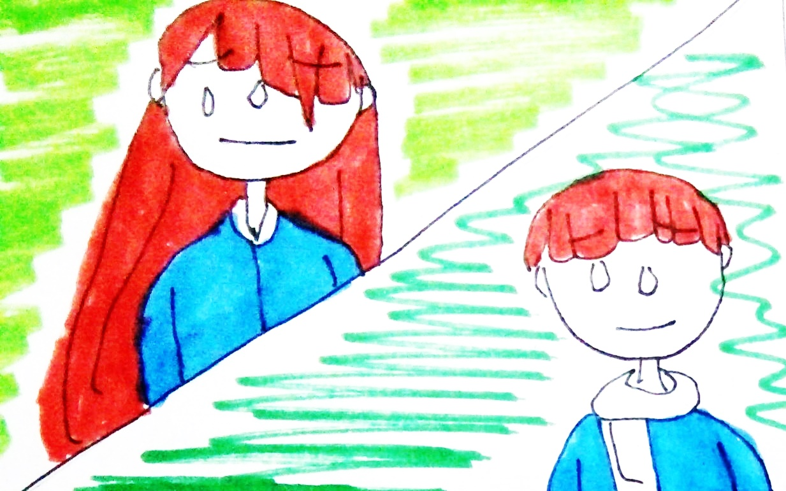Two heartless beings
One
barely holding itself together
light seeps out of the edges
Two
A beautiful broken mirror
barely holding itself together
broken edges shining a little
Both heartless, out of soul and dead inside
Yet still shining gratefully towards life
The Yellow Leaf
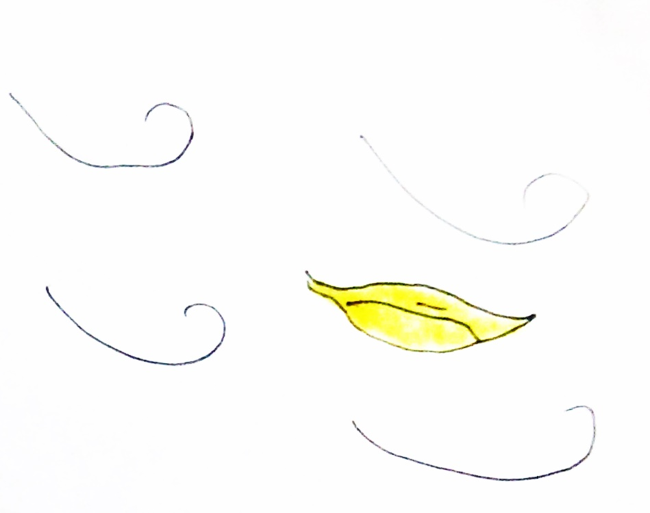In the
Sidewalk is a yellow leaf
Alone
Abandoned in grief
Wondering when it can go in a whiff
Far from the world of trees
Gree

Gree is an unfinished poem
Filled with couplets and rhymes
Like a firework of stanzas
Gree is an unfinished song
Filled with highs and lows
Like a firework of notes
Gree is an unfinished novel
Filled with beginnings and endings
Like a firework of words
Gree is an unfinished script
Filled with comedies and tragedies
Like a firework of lines
Gree is an unfinished thought
Filled with ideas and thoughts
Like a firework of imagination
The Queen

The Queen
With her cold red eyes
Chilling the bone
Eyed the Duchess
Who carries a steady smile
So smug
So confident
'Oh how I wish I can stab you in the eye!'
The Queen with her
Blood red lips
Talks imperiously.
Asking what
The Duchess's business
will be
The Duchess,
Unafraid, unassuming
Asks for a platter
Bearing sweet and luscious
Apple tarts
'Oh I wish I can cut off both your arms.'
The Queen
With her pale
Glassy skin
Gleaming
With blood
Red rubies
Raises an eyebrow
The Duchess
Ugly like an ogre
Smiles revealing rotting
Yellow teeth continues.
admiring the luscious apple tarts
'Oh, how I wish I can hear the creak and crackle of your bones as they break.'
The Queen with
Her thin imperious arms
Points to her stiff
Guard cards
The Duchess
Smiles hopefully
Completely unabashed.
'Off with her head!'
'Oh how I wish... '
Prose
A few of my stories can be found online. Mostly, on a Quotev account under Kailler Sorami and some on the writerscafe account. Most of them are kept in my journals or on my laptop. Like always, enjoy!
Essays
Puzzled Life
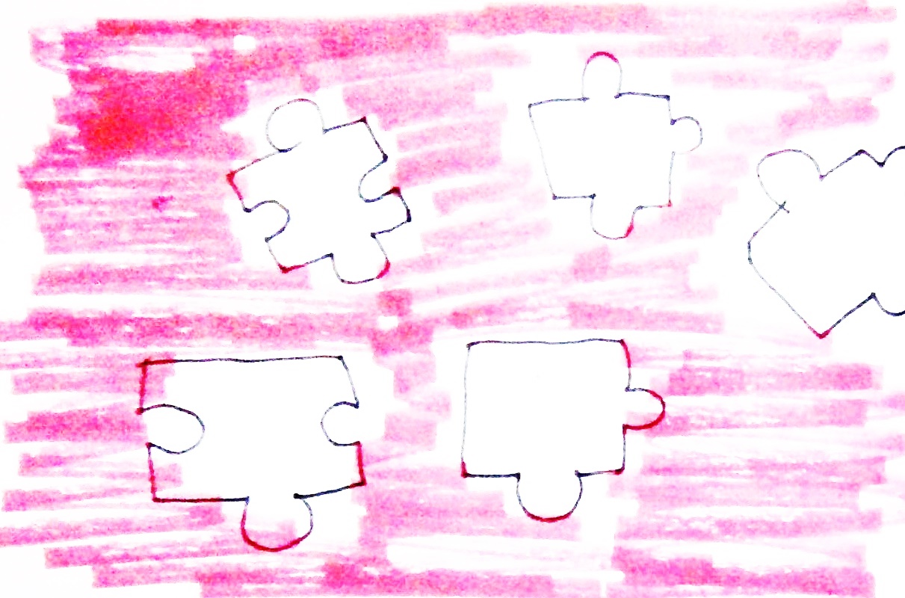Parang isang malaking puzzle na may maliliit na piraso ang buhay. Lahat ng parte ay pagdudugtungin ng matagal. Nandyan ang madadaling mailagay at mabuo. Tsaka darating ang mga mahihirap na parte kung saan hindi ko alam kung ito ba o ito, pag-iisipan ko nang mabuti kung anong parte ang ilalagay ko.
Walang pipigil sa akin kundi ang aking sarili. Kung magiging determinado ako matatapos ko ito. At sa oras man na ito’y aking babalikan, may maipipinta akong ngiti ng tagumpay sa aking mga labi.
Eroplanong Papel
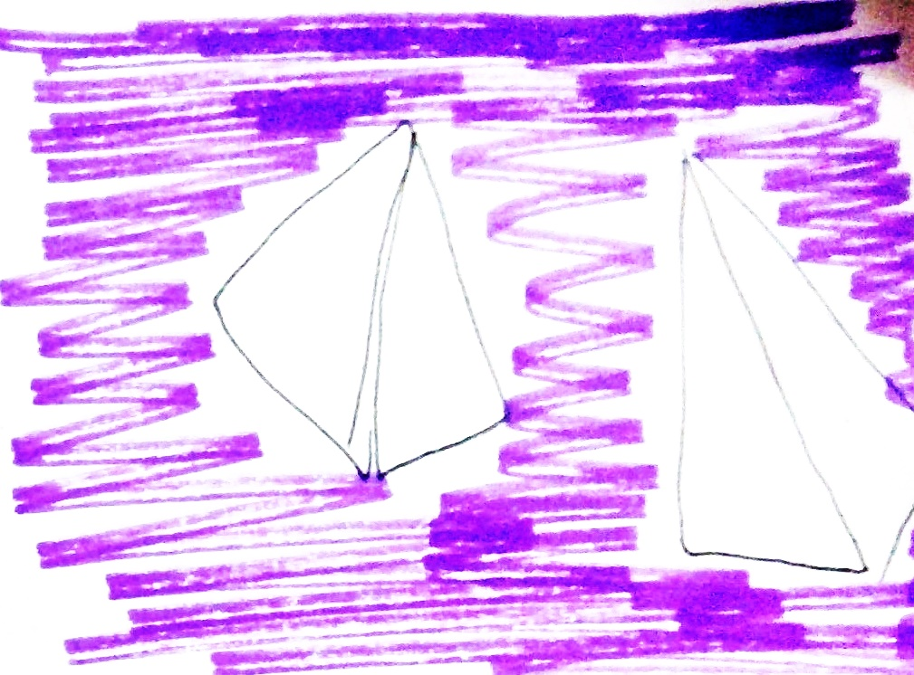Kumuha ako ng eroplanong papel at isinulat ko doon ang aking mga pangarap. Tinupi ko ito at ginawang eraplano. Ito’y aking pinalipad, umaasang ito’y hindi mahuhulog agad at magpapatuloy lamang sa paglipad.
Sana pagbalik nito’y nasa dating ayos pa at mas maganda pa kaysa sa dati. Dahil nangangahulugan iyong ang aking mga munting dasal mula sa aking kamusmusan ay napakinggan. Na ang lahat ng iyon ay magagawa ko pagdating ng panahon.
Kapag umiba naman ang ihip ng hangin at bumalik itong gutay gutay at wala na akong mabasang ni isang salita, tatanggapin ko pa rin ito. Gagawa ako ng bago at paliliparin muli sa kalangitan ng pangarap.
The Race
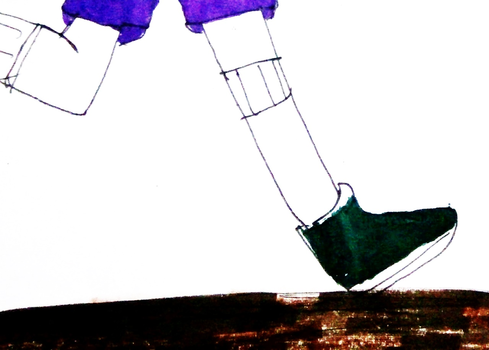Life is a race, all of us are participants of this run. All of us are going to run until we reach the finish line. Well, not all of us are sure enough that they can run without having any problems while in the competition. There will always be a time when someone will fall behind and that person should choose between triumph or failure. On this part of the run, some might choose failure and think that it’s all over for them. Still there’ll also be people who will choose triumph because they’re determined to reach the end of the game no matter what happens to them. For them, winning is optional. Finishing what you have started is far more important.
Most of all, they hold on to Jesus’ strength when they cannot stand on their own. They knew that there’s someone who’ll help them in the challenges of their life. There’ll always be someone who’ll let them taste triumph despite their defeat, and there’ll always be someone who can make all impossible to possible.
No matter what we choose between the two, it will always be the verdict of what we will be in our life.
My ways
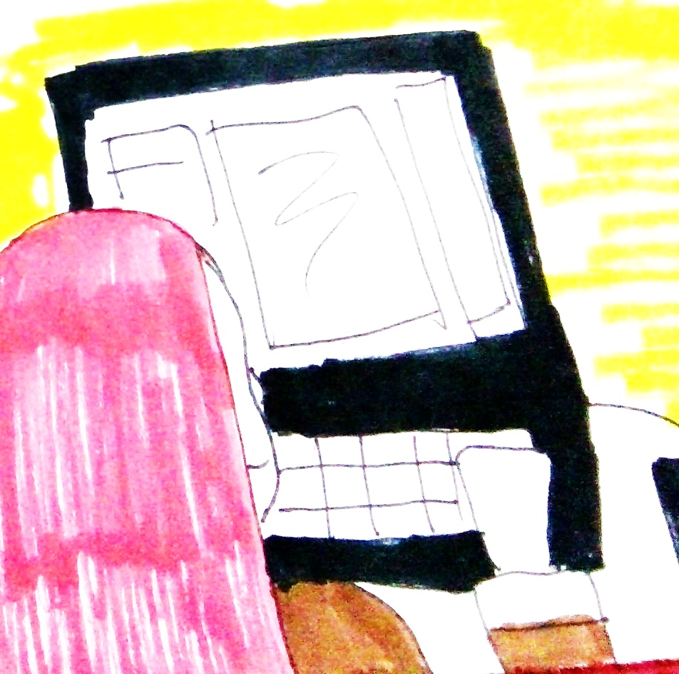I’m not always going out of our house during weekends because I’m not that kind of teen who don’t have strict parents. Still that won’t stop me from trying to influence other people’s lives. Though it’s not that easy to change something, I’ll try my best and put my assets to work.
Being a part of the youth, it is one of my responsibilities to give hope to others. Hope for them to move and change the world to a better place. I would put God first in everything I do because he’ll be the only one who can touch my heart and give me strength to always go on. Facing different kinds of people isn’t easy for me, I’m not as overconfident as I think I am but still I would try to convey my message.
I would write to inspire and post it in the internet and find helpful sites that can pass on my message. What’s more important is that I was able to reach someone’s heart and change the way he/she thinks. Even though I won’t be able to meet that person in personal at least I know that I inspired them to move for a change. I will always use a simple mishap in my life, what I learned and what God did for me at that time. That tool will make my writing something that someone can relate to.
I can also give a simple, ‘Have a nice day’ in every start of their day and ‘God Bless You’ with a smile. I can always do a lot of things that my potential can reach. More importantly, I would stop belittling myself, thinking that others can always do better. God made me and I am unique. I exist for others not just for myself or my friend or my family.
This world is composed of people that can give help, receive help and needs help. I’m not like God because I can’t carry the burden of the whole world but as I mentioned earlier, I’ll always do what I can. I won’t give up because I know I can do it.
Anatomy of a Villain

You need to be a monster to understand. To be able to look at someone dying in front of you without the hint of any remorse or sadness or empathy for all that matters. Or even destroy someone else’s life without thinking of what other possibilities it might incur.
People usually tell things like, it’s because the villains are people who are unsaved. People who go through too much hardships and finally at a snap of a teeny bit a second, the malice of revenge was born in their fragile hearts. And it gave them strength, turned their hearts to stones and in the end made them nightmares.
But then again, what if it’s simply a call for attention. A call that for once they can hog the stage, to be in par with the main hero of the story and to contribute for the good of something that would someday might be better.
And would a hero function or even have meaning without a probable and appropriate villain?
No?
Well, right. No.
Even the great stories of this lifetime owned it's down to earth hero along with the vile villain. Because there’s no story without these two and for all that matters, who would care about the diary of a certain no-name who shared yet the same black-and-white world as you do?
Everybody wanted spice in a world where sugar’s more expensive than anyone can buy. Spice, after all, lead to discovery of places that no one else would have known. And spice can be color despite its taste.
People sought this spice to color themselves. To satisfy their imagination. To get out even for once in that dusty old room where there’s nothing but the four corners of a small universe. It might have been comfortable but yet again bland.
And with how fast paced the world turned at every second per minute that rolled by per hour passed by days and ended in years, there’s the subservient need for spice.
That was what a villain can provide.
The villain that everyone hated in every single story even though he was the very reason why the boring hero would even strive for something in his uneventful life. The villain who don’t know what to do with his life other than write plans down to destroy the boring hero’s peace. And the villain who always seem to get nothing in return at the end of the story but defeat and heartaches. Even though he should receive as much praise and love that the hero received.
Wouldn’t you thank a villain for such a thing?
For letting you enjoy a roller coaster of emotions just because you spite them and praise them for how clever their evil plan was? And for getting you on the edge because you cannot imagine, even the slightest of a solution as to how you, who relate to the story’s main hero, can get out of the evil plan.
I’m not saying this because I’m a villain’s literal fan but it’s because of how unnoticed their contributions are and how sometimes they are just filler characters who are called in the end to make the story look like it have some doubtful conflict. But then again, a story won’t have enough power if there’s no presence of one.
It’s like yin and yang. A creative balance that would get you on a roll and make you cheer harder for who you’re betting against which was mostly without a doubt the world’s created hero.
Also, villains are the formation of what the people cannot see while they look in the mirror. The inner feelings of wanting to sometimes stab someone in the back and get away freely without even having to feel anything at all or be guilty for breaking anything. The feelings of wanting to steal someone else’s precious possession. The greed of wanting everything in this world. The feelings of wanting to be loved just like anyone else.
Villains are the ones we used to hate. But they actually live in each one of us.
The World is not (NEVER) yours

When you were born to this world, sometimes you subconsciously think that the world - small as it is - revolves around you.
But in reality, it doesn't. (It will though if you're the only one living in Earth.) The earth is filled with billions of people who share the same subconscious. But that's not how it is, the world's logic doesn't work that way.
We revolve around the presence of others, who deserves as much attention and considreation as we do. Sometimes, all our petty dramatic problems cannot compare with the hunger some people on this world suffer from. It cannot compare with the terrorism that some people need to face everyday. It cannot compare with the slow deterioration of the earth, a serious problem.
Yet, it's not llike you can do anything huge on your own. You need other people to work with you(proving yet again that the world doesn't only revolve around you.)
At the same time, it is a subconscious we can't stop. But we can do any means to subdue it and if possibly grow out of such a miserable state of mind and give way to maturity.
Jenga
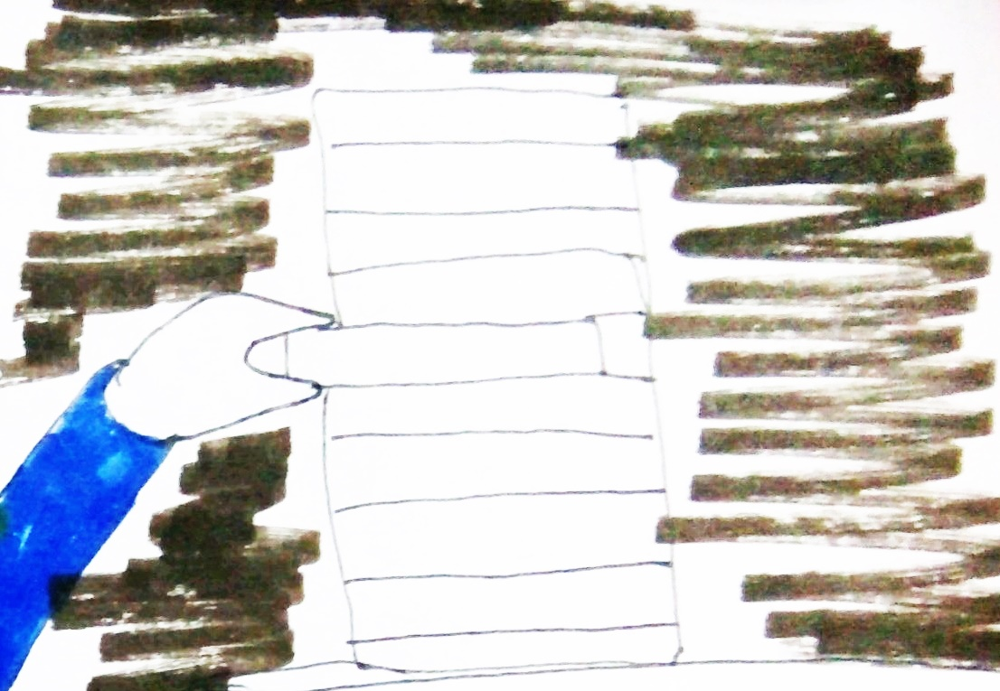They built you like a Jenga tower, allowing you to stand tall like an Almighty monarch looking over his lowly subjects.
You thought that is all.
But slowly, one wooden block after the other is removed slowly. They test your balance, your sense to stand tall. At first, they were careful as care is essential for you not too fall.
Yet they became daring as time passes by. You thought they would allow you to stay high and mighty.
No.
People get tired eventually and easily too.
You thought, you hoped.
Nonetheless, after one tricky pull of one wooden block you fall as easily as you were built.
That's your life. Even after thoughts and hopes and dreams of simply staying up. Up, in the company of clouds, rainbows and everything nice. Sure, they will build you up again. That's what they do.
But bear this in mind, people get tired eventually and easily too.
Short Stories | Dagli
Placebo Effect

The doctor nods at you, recognition crossing her face. She states your name and asks you for confirmation. You nod.
She leads you to her clinic and motions you to sit. You oblige, sitting yourself down on the plastic chair. Its cold surface makes you feel the gaping hollow on your heart. The hollow becomes colder and more abandoned. You know, you have been alone for a long time that it doesn't matter anymore. Someone once said that loneliness is underrated. You agree.
More people put on their happy faces because they say that life is short hence their wide smiles. You never know why they don't understand that indifference and hollowness exist too.
Sometimes you believe that if you end it all, right here right now maybe the work will be happier. Besides, what's one indifferent life to more than one happy souls?
The doctor snaps her fingers in front of you, pulling you away from your reverie. Your eyes blink back at her in focus. You try to focus.
She asks you if you are taking your medication.
You nod, telling her that you do and you do it religiously. It's as religious as it feels like drug addiction. It makes you feel happy at times. It makes you feel hopeful. But it doesn't do it longterm. Sometimes the hollowness is too much that you stay home. You don't want people always asking if you're okay even though the answer is all over your face.
You stay home. Your eyes focus on the ceiling. You know that there's never going to be an answer written in the coldness of that cemented ceiling.
But it gives you time to think, time to find reasons why you should stay alive.
You watched a short video clip a long time ago. It is about a rabbit who lived most of his life in success and yet after fifty years, he points a gun to himself and shoots. The gunshot echoes at the end of the clip and you think to yourself why people can even think of doing something like that.
But that was before.
Right now, you're grasping straws for reasons to stay alive. You find fewer and fewer as days passes by.
The doctor smiles at you, commenting brightly that she knows that it's taking effect. You can do it, she says. You can beat your inner demons, she adds.
You give her a thin smile. You don't know if you can beat them. Because they had been gnawing at your positivity day to day.
She writes something on her pad and asks you about your day. You tell her how it is because why not? It's her job to listen to you. She probably doesn't care either way. To her, you're probably going to be just one of her patients who suffer from this sordid unwillingness and tries to medicate themselves from it.
She allows you to talk for awhile and when it's done, she suggests that you keep on taking your medication and that you keep on doing things that would make you happy.
Placebo effect.
When you get home, you sit on the couch, thoughts swimming. You know there's many of them who loves and cares for you. But your heart is unreachable, your thoughts downing.
You don't know if you'll ever feel better. Maybe you will. Just maybe.
Valentine Roses are always red

Blood started to pool around me, its dark color reminded me of those red roses I left for my Mother for Valentines day.
I parted my lips to say something but I can't even utter a single syllable out. Maybe it is the shock of finding myself in this situation. Blood oozing freely from my slit throat.
I can hear murmurs, low and acted out as if its a very touche subject. My gaze focuses on the nearby people.
They watch and point at me.
It would have been crazy if I laugh out of sarcasm and that would also be too much hypocrisy.
After all, when I wasn't here lying and waiting to die, all I ever did is watch.
I stayed on the safe side not wanting to get involved. For example, that time when a thief bumped into me. Instead of helping the poor victim, I only moved out of the way to avoid it.
When I caught a glimpse of a gang war, I made a mad dash back to the safety of home.
While my mom is getting beaten by my Father, I pulled on my headphones and turned the volume up high.
When my sister left an important thesis and I could have sacrificed my first class to give it to her but I didn't. She came home wretched and teary-eyed.
When I passed by the corridors and noticed a student cornered for money, I didn't think twice as I started moving to escape.
All this time, I ignored people who needed help and now as my vision blurred, the looming shadows hummed.
'What a poor boy, dying so early...'
I guess... I just got what I deserved.
Cigarettes : Her Side

“Stop making that kind of face,” he complains, giving her a really sour look. She looks up to him and shrugs. That’s how he is anyway, always wanting her to take the positive side while he looks like the great negative ball of energy he is.
“What now?”
She stands and walks over to the other side of the room and he follows silently in a soft tiptoe. Ignoring him, she pulls her drawer open and grabs a pack of cigarette.
“You – since when?”
“When indeed?”
The flame from her lighter lights and soon the cigarette smokes a line up. He’s making his face again. Full of disappointment and questions. She simply ignores it and tastes the calming bitterness of the cigarette which has taken a long time to get used to.
He shakes his head, “Fine, I’ll go. I don’t even want to be a second hand smoker.”
As if she didn’t know.
The door slams hard behind him and he didn’t even apologize.
She sinks to her floor and exhales the cigarette smoke. Everything is okay… until he starts taking away the positivity she’d ever have in life. Because of his grim faces and snide comments and because of that negative personality, here she is, falling like he did.
And there’s no turning back yet.
They used to be happy. Two people deep in love, both widely grinning and shining.
She has been his savior, the one who cared and dragged him out of his small shell. He's love for her had been so tender that she never dreamt of letting him go. She always wants to be by his side and stay on his side even if the whole world turns against him. Because she's the one who will always love him most.
But now...
As her eyes fleets to the turned down picture frame, she starts to smirk.
Those pictures... they were like dolls fringed with fake smiles, preserved for the world to see... for this day and for the next days.
They were fake memories of strangers too far from her reach.
She sinks in quicksand while these memories stare down at her with leers on their faces. Pitying her current state, making her look more helpless than ever.
She breathes the cigarette out and sighs.
Where did it went wrong? that's the question written all over his face when he left.
Indeed, where did it go wrong?
She had been adamant... confident that no matter what happens, since she already changed him, he won't go back.
He won't change because she's done changing him. That's what she thought...
And yet... after she passed an International College exam, which they both took, he went down the drain. Not without a choice and certainly not because someone else forced him to. He went down because it had been his nature all along.
He started forgetting their meet-ups saying that he had to study... he had to concentrate... he had to have a future. Completely discarding her presence and forgetting that she had been his life and had been a huge chunk of everything that he is. It was heartbreaking.
Seeing him concentrate on books... books... books...
Getting ignored most of the time.
Having to get used to him not going home with her anymore because he had mock school.
It was hard so she confronted him for it. But what did he say?
He insulted her, saying that just because she's so greatly intelligent she looks down on all his efforts and laugh her way off to International School. He told her that she was beyond greed that she never thought of his feelings and how hurt he was for not getting to that school when it had been his dream for long.
He told her that for her, he might have been just trash.
She had vehemently denied such vile words but he didn't let her. He even had the guts to actually slap her across the face if not for a classmate, stopping him from doing so. He walked out on her but before that he had spat on the classmate's face, who was a guy, and called her a dirty bitch.
And in pain, she watched, the man she used to love had never been the same. He is the stranger he first was when she met him.
He is the hidden monster inside the man who had never shared his deepest secret to the world. He is the man whom she never got the chance to soothe.
Even though, she had gone against even her parents' will, she gave up the scholarship hoping that he would come back. He did eventually and had been more loving than before.
And that had been her close step to the cliff and now she had fallen.
IDK

I didn't know that falling for you would lead to this.
"Halt!"
The booming voice of the police resounded on my ears. I stiffened, cold sweat trickled down my forehead. My eyes shifted to the left, a wall was there. My eyes shifted to the right, the road to escape's right there.
Maybe it's the reason why you seem so distant. Why you're so secretive... and cautious... despite being popular among everyone 'round here.
I'm running.
I can only think of escape because. This is not happening. Not to the greatest guy on earth.
The sirens’ calls are starting to get louder. They will catch me in no time.
No... Please no...
Hey, didn't you love me back? You kissed me at the middle of that crowd jam... You let me hear some of your insecurities... I held you tight when you ask me not to let go.
"Stop. Right. There."
I have nowhere else to go. It's just that bricked wall and the police on the other side with all their guns pointed at me.
"Put your hands over your head and calmly surrender."
I turned and brought my gun out.
A single gunshot was heard.
I didn't know that you're working with the police...
Ah, bitter so bitter...
Takas
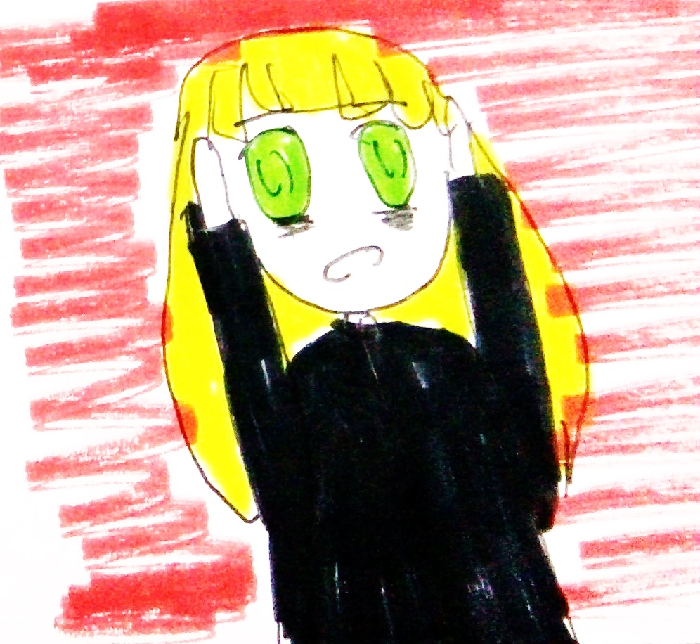Kinain nila ang kapatid ko. Pinutol at pinagpyestahan. Wala akong nagawa kundi tumakbo at maghanap ng matataguan. Wala akong magawa kundi umiyak na lang at dumulog sa Diyos na ako’y Kanyang iligtas mula sa mga malalaking taong iyon. Mga higanteng walang ibang ginawa gundi ipaglandakan ang kanilang katangkaran at kainin ang mga taong katulad ko.
Binilisan ko ang pagtakbo, pinilit ko ang katawan ko na makaya ang paglayo kahit na kanina pa ako humihingal. Kanina ko pa gustong magpahinga at makahinga ng malalim.
Ang puso ko’y parang lalabas na mula sa aking katawan at ang paningin ko’y lumalabo na. Sinubukan kong labanan ang kahinaan ng aking katawan dahil kung hindi ko gagawin iyon makakain din nila ako.
Ayoko pang mamamatay.
Bigla akong napatid sa isang maliit na bundok sa daan. Nagawa nitong saktan ang aking paa kaya hindi na ako makatayo kahit na pilitin ko. Tumingin ako sa aking likuran at agad akong lumingon.
Humilab ang aking tiyan. Gusto kong masuka sa aking nasaksihan. Ang maliit na bundok na aking napatiran ay isa pa lang ulo ng isang taong hindi ko kilala. Sumasakit na ang aking ulo ng sinubukan ko uling makatayo. Ayokong matulad sa kanya.
Ayoko pang mamatay.
Tumakbo ako ulit kahit na ako’y bumagal kaysa dati. Kailangan ko lang abutin ang bakal na pintuan na nilalabasan na ng ibang taong katulad ko. Kailangan kong mabuhay, kailangan kong umalis mula sa mahabang bangungot na ito... kailangan kong...
May sumunggab sa aking malaking kamay. Takot ang agad na yumakap sa aking buong katawan. Nanginig ako na parang konti na lang lalabas na ang aking ihi. Tumindig ang aking mga balahibo.
Hindi ito maari... Ayoko pang mamatay...
Sirena

Huli ko siyang nakita noong bata pa ako. Mahaba ang kanyang kahel na buhok at pinalamutian ito ng mga perlas na kuminang sa pagtama ng araw. Sa halip na mga paa, ang mayroon sa kanya’y isang habang buntot ng isda. Puti ang kanyang mga kaliskis na kumikinang din sa bawat pagtama ng hibla ng araw.
Ang mukha niya’y napakaganda na wala na akong ibang taong maikukumpara sa kanya.
Ang kanyang boses ay malumanay na para siyang kakanta matapos ng isang salita.
Naalala ko ng ako’y kanyang tinawag at pinakiusapang siya’y samahan sa malaking batong kanyang lagian. Sumunod naman ako at tinulungan niya ako paakyat at pinaupo sa tabi niya.
Tinanong ko sa kanya kung ano ang kailangan niya sa akin. Binigyan niya ako ng isang napakatamis na ngiti at hinalikan niya ako sa pisngi.
Hindi ko alam kong bakit bigla akong namula. Baka dahil napakainit lang ng araw na iyon pero pwede namang sadyang naakit lang ako sa kanya.
Kinantahan niya ako pagkatapos. Sa bawat pagtaas ng kanyang boses ang alon ay malakas na sumasampal sa batuhan. Sa bawat pagbaba naman ang hangin ang dumudulog at nanghahaplos sa akin.
Tinitigan ko lamang ang mga alon hanggang sa ako’y nakatulog na sa kanyang awit. Nang nagising ako siya’y nawala na sa aking tabi. Kapalit niya’y isang kwintas na may perlas bilang panggitnang dekorasyon nito.
Iyon ay aking itinago at hanggang ngayon ay hawak ko pa rin.
Isa na akong ganap na binata ngunit siya pa rin ang naalala ko. Kaya sa unang pagtapak ko sa mga putting buhangin ng aking kinagisnang bayan, ang batuhan na kanyang lagian ang una kong pinuntahan.
Palubog na ang araw ng oras na iyon. Nagawa pa rin nitong ako’y daanan at pinakislap nito ang perlas na nasa aking kwintas.
Novel Plots
I also write novels! Most of the current ones are not yet done but here are the plots of what I'm working on at the moment.
Path to Blood Red Roses
This novel is about a city filled with urban legends, most of them connected to the real legend -- The Ice Fairy. Most events are the usual, nothing that interesting unless you enjoy deaths. But the disappearance of Gabriev Filhelmina causes the cogs to set in motion.
Excerpt:
THE RED WARNING SIGNS in the computer screens scream out like a crying banshee to the experiment team. Its primary cause: overheating. The lead researcher stands up, his hand immediately resting on his side. In context, there’s nothing wrong with that fact. It only means that yes, they succeeded. Yes, they can move on through. Yes, his dream of revenge will finally bear fruit.
But he’s the only one who looks happy.
If one is asked to look around the room, he’ll immediately feel like he’s stuck in between two narrow spaces. There’s no way out. This is a stupid idea. How will I ever survive? Those were the thoughts the observer will think. Those are the thoughts that the other researchers have in their minds right now.
Yet no one dares to raise a hand, ask a question. Everyone simply stares at their screen, frantically typing codes and finding a way to delay the inevitable.
One may ask, have they forgotten their contracts? Have they forgotten that even if this job they willingly took and this job that gives unbelievable wealth to their love ones, is actually their death sentence? Have they forgotten, indeed?
They haven’t. Now, it’s time to pay the price as the warning signs flood the whole room with its reddish color. “Director, are we…going to just ignore this?” someone speaks up from the group of researchers who already had lumps in their throats which they keep on swallowing in disbelief.
The director turns to this particular curious person and smiles. It is a smile that you will never find on a human who have compassion. It is the smile of a triumphant man who doesn’t care whether most of the people in this very room die.
This is when it became clear to everyone in the room what they actually signed up for. They signed up their lives to a demon, much worse than their actual experiment. Yes, he might not be able to tear them apart and eat on their remains. But he is very able indeed, to keep them all in this room and not allow any of them to live.
In this twisted sense, the Director believes that this is what the philosopher’s mean by sacrificing someone for the greater good. Soon, as the other researchers’ faces pale at this realization, the whole room burst into pieces. The room now doesn’t just become painted with the red light, now it is slowly painted in red.
Afterimage of Red
For Caramel, waking up in a tea party filled with invisible people is bad enough. But not having memories plus having people who want to kill her made it worse. Not to mention, how people seemed awfully nice or secretive towards her. Everything is just wrong and yet the time continued to move. Based on Lewis Caroll's Alice in Wonderland.
Excerpt:
The murmurs stopped and every chair seemed to turn towards a direction. And slowly the sound of tea time died one after the other. She turned her head or at least imagined doing so, and looked around until her vision cleared. The table was actually empty, saved for the translucent man before her. She narrowed her eyes, still feeling sleepy. “…what? What’s wrong with waking up?”
The translucent man laughed lightly but the tension in him was pretty much obvious.
“What you say? I just didn’t think that you’re going to… you know after all that…”
“Hmm…” she closed her eyes. “Why was I asleep?”
She heard him shifting on his seat. “You don’t know?”
She opened her eyes again and this time as if seeing clearly, she suddenly gasped in surprise and fell over her seat. In her way to her fall, she grabbed the table cloth in an attempt to save herself but ended up dragging it down. Everything in the line fell and crashed to the ground. Chairs started to move on their own and then voices.
“What the?”
“We were kind to her and this is how she repaid our kindness!”
“Ah, the blueberry cake!”
“Oh no, this is horror! The tea! The TEA!!!!”
“Gah! March Hare! Why did you invite such a klutz to our tea party!”
“And she seemed too nicely dressed that I thought she’d have manners!”
However, the translucent man’s attention weren’t on them. He was staring at her horrified face. Then, he lent a hand. “Are you okay?”
“D-Don’t come near me!” she yelled, backing away.
“Come on, now, I won’t do anything to you,” he said with a small smile.
She shook her head. “What are you?! What are those?!” her fingers pointed at the invisible people who all stopped chattering. “Why am I here?!”
“I brought you here and really, this isn’t anything serious,” the translucent man replied, his hand still offered to her. She kept the look on her face, eyes blazing.
“Not serious? You kidnapped me, didn’t you? Well, you’re not going to get anything from me!” she stood up and without turning, ran away. She can hear the man’s pleas for her to come back but she ignored it. Questions rammed her head, all pointing to why she’s here. And how can she go back home. And if this is a dream, she forced herself to wake up. However, even if she pinched her face, nothing changed.
The Grimm Journey
Dearest Alphonse –-
Hello there, young Grimoire. I received your letter beforehand concerning your request to use my humble abode for your research. I am quite intrigue as to why you’d want to stay in a place that is rumored as a haunted house.
Although, I assure you that those are nothing but old wives tales—rumors as they say. I already prepared the mansion for your arrival, every servant is at your beck and call. A fair apology of mine for not being able to be around your time of research, given that I’m still recuperating in St. Nicholas Hospital. I hope that you’ll be able to use my humble abode as you see fit. That is all and best regards.
Signed By:
Wilhelm Grimoire
Dear Sir Wilhelm,
I am grateful for your hearty response. My day had not been eventful since I received your letter. I assure you, I will be able to use your humble abode to its fullest. I am certainly grateful for you accepting my request.
Also, I hope that you will be able to come back in good health. My mother wishes for that too and she wants to meet you when that time comes. I would also like that. I extend my thanks to you once again.
Sincerely yours,
Alphonse Grimoire
To: Straight-Laced Alfie
From: Me
I knw we hn’t bin in touch in yrs. But… I herd
u’re going sumwer so… tk me alng?
From: Straight-Laced Alfie
To: Me
Sorry? I am not sure if I get what you are trying to say here.
To: Straight-Laced Alfie
From: Me
Just take me along, Alfie.
From: Straight-Laced Alfie
To: Me
That is not a good idea.
Sidenotes
Ever since grade five, I had started writing. I'm actually influenced by a friend who had started earlier than I did. At that time, I'm not really good at drawing so I started writing. Since, she wrote dialogue-typed stories, I started with them too. In fact, I have at least three or more notebooks of my writings during fifth grade. Most of them, I kept in a box.
By sixth grade, the Journalism club wanted to hire writers. I thought there was a similarity between the fiction genre(the genre I'm working on) with news. So I tried going for the Featured Artist, where I can write essays and all. However, the Journalism teacher placed me under News due to the apparent loss of the paper that I passed for the test out of how I write. At first, I trudged on blindly with the area but managed. In fact, I'm able to reach until Regionals with it.
Before I went to BCNHS, I'm supposed to actually be in Saint Louis University Center. I already passed the exam and my Mother even paid for the downpayment. However, a friend of mine, the same person who became my inspiration in starting to write showed me an application form for the Special Program in the Arts for City High. At first, I didn't want to take it since I'm pretty much set for SLU Center. But my Mother pointed out that I liked to write so she asked me to try. Now, there's also a Journalism Club for City High but is only reachable upon 3rd year of High School. So, I just went on with the Special Program in the Arts -- Literary Arts. I passed the first test and we had been asked for a second one. The second test is mostly a practical one and we had to show how we write there. I even passed a portfolio of the news that I had written during my involvement with the Journalism in sixth grade. I also passed this exam and so I had been in the program.
At first, I had to trudge on again because News writing is hugely different from Literary Arts. I had been to used to realism that I didn't know that you can also write with art.
Nonetheless, I'm able to overcome that and even survive the whole four years of my stay there. We are initially trained to write in English and Filipino so I can say that I can be proficient in writing in both sides. Although, I mostly lean on and prefer it in English. My notebook collection of my writings growing by then too.
Now, there are points along my highschool years where my involvement with online writing sites bloomed. I write from prose to poetry to fanfictions. Alongside that, there also came the growing edge in me to stop writing. I continue losing motivation and believed that all I'm writing are just crap to people. I float there sometimes. But, it didn't exactly stop me and up until now, I'm still writing. Although, it isn't my notebook collection that's growing already but mostly the documents in my laptop.
Some other sidenotes
I mostly write in different genres of fiction: drama, tragedy, slight comedy, fantasy, some adventure, some romance, dark, some suspense, some thriller and some other genres. Although, I haven't tried much of non-fiction aside from in poems or some essays. Also, I love reading books and most of my inspiration comes from them.